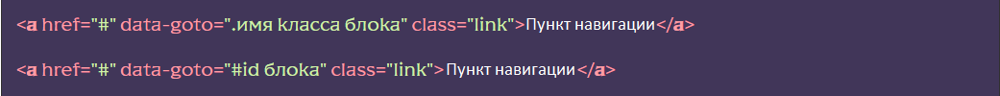
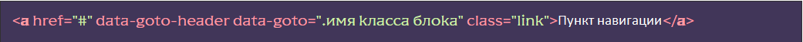
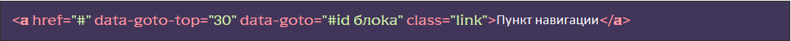

Подключение функционала
[JS] В файле js/app.jsраскомментировать строку flsScroll.pageNavigation();
Использование функционала
[HTML] К элементам навигации (пунктам меню), либо к произвольному объекту, добавляем HTML-атрибут data-goto, a в качестве значения указываем CЅЅ селектор блока до которого нужно прокрутить:
Если нужно чтобы скролл учитывал шапку (не докручивал на высоту шапки, используется при фиксированных шапках) нужно добавить к объекту навигации атрибут data-goto-header:
Если нужно чтобы скролл не докручивал до блока на указанную высоту необходимо добавить к объекту навигации атрибут data-goto-top, a в качестве значения указать число - необходимую высоту:
data-goto-top можно совмещать с data-goto-header, тогда значение data-goto-top добавится к высоте шапки.
Добавление класса к текущему пункту навигации
Для включения функционала добавления класса подключаем модуль наблюдатель:
[JS] В файле js/app.js раскомментировать строку import
‘./libs/watcher.js’
[HTML] Для блоков к которым прокручивается страница
добавляем атрибут data-watch со значением
navigator:
После этого, при прокрутке к облоку (объекту) навигации, к соответствующему пункту навигации будет добавлен класс _navigator-active
Прокрутка к нужному блоку по хешу (при открытии страницы)
Для того чтобы прокрутить страницу к нужному блоке при открытии страницы необходимо добавить к адресу хеш содержащий имя класса нужного блока.
Пример адресной строки и нужного блока:

Добавление функционала, плавная прокрутка на iOs
По умолчанию, прокрутка выполняется методом scrollTo() с параметром behavior: “smooth” без применения дополнительных плагинов. Но это ограничивает функционал этого модуля - нельзя указать скорость прокрутки, а также могут возникнуть проблемы в в некоторых версия браузеров на iOS. Для решения всех проблем, можно подключить дополнительный плагин SmoothScroll, сделать это можно в файле js/files/scroll/gotoblock.js раскомментировав строку import SmoothScroll from ‘smooth-scroll’; дальнейшее переключение прокрутки на плагин произойдет автоматически.
При работе с плагином появляется возможность указать скорость прокрутки, для этого элементу навигации нужно добавить атрибут data-goto-speed и указать число означающее количество миллисекунд за которые совершится прокрутка (1000 = 1 секунда), по умолчанию 500.
Расположение и дополнительные данные
Функционал находится в js/files/scroll/scroll.js. Название функции pageNavigation(). Вспомогательный модуль прокрутки gotoblock находится в js/files/scroll/gotoblock.js. Модуль наблюдатель находится в файле js/libs/watcher.js.